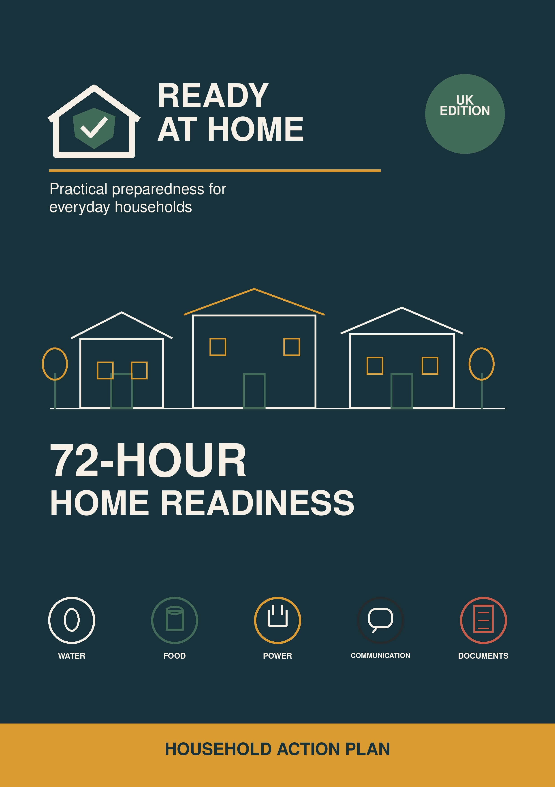
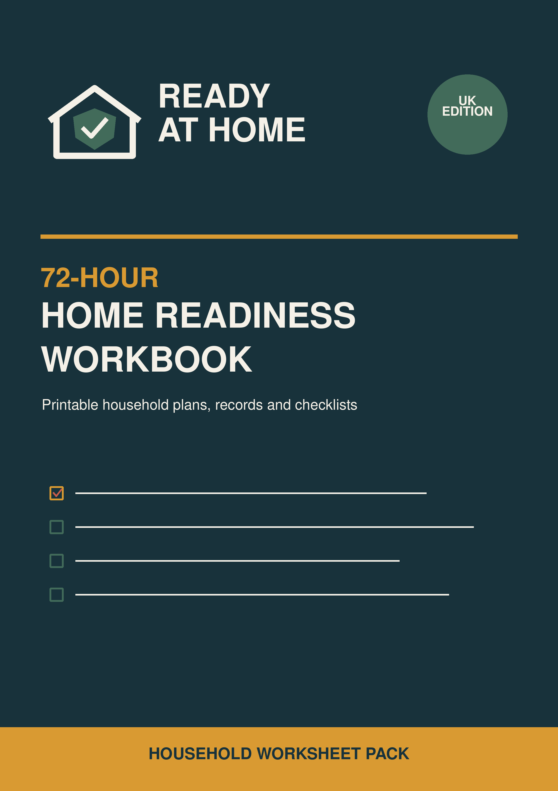
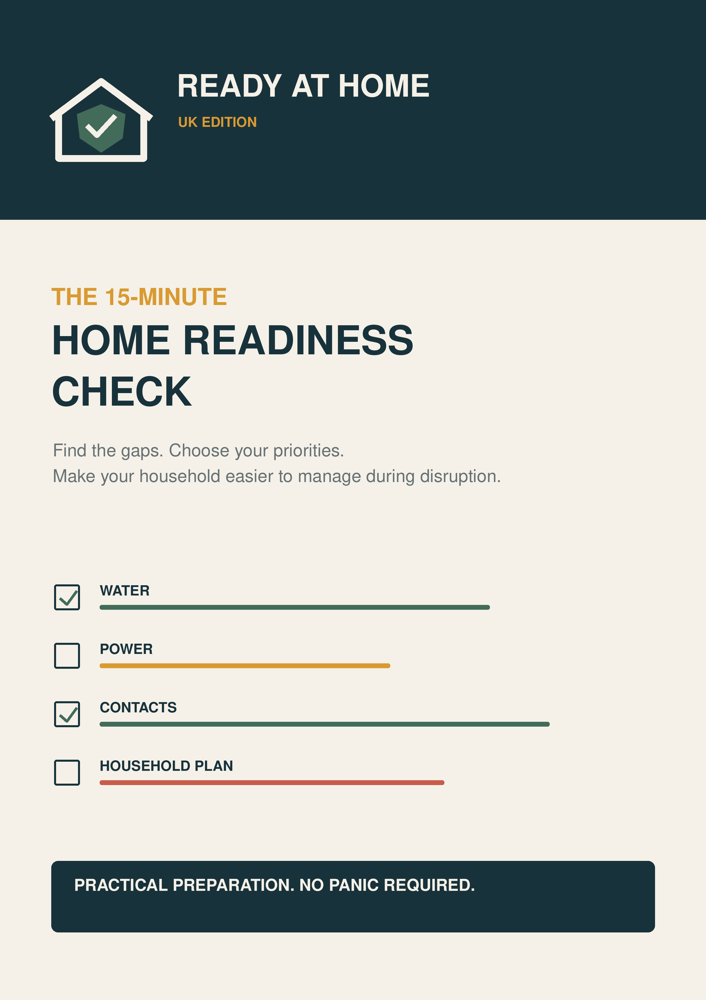

Your phone becomes everything
Your torch, radio, map, contact list and payment device, until the battery dies.
READY AT HOME
No power. No tap water. No card payments. A phone battery running down. Most disruptions are manageable, until several small problems arrive at once.
Ready at Home gives you one clear, realistic household plan before you need it.


Printable workbook includedA plan you can actually use
SMALL PROBLEMS COMPOUND
A power cut or water outage doesn’t need to become a crisis. But without a simple plan, ordinary problems escalate quickly.
Your torch, radio, map, contact list and payment device, until the battery dies.
What you have may be difficult to cook, unsafe to keep or simply not enough.
Medication, mobility equipment, baby supplies and pet needs can’t be improvised.
Everyone needs to know where to go, how to reconnect and what matters enough to take.
THE COMPLETE UK EDITION
Turn loose worries into a practical 72 hour plan using the guide and printable workbook. Start with what you own, fix the gaps that matter and ignore the things that don’t.
US EDITION
US agencies, measurements, regional hazards and US Letter worksheets.
WHAT’S INSIDE
Use only the pages that apply to your household. You don’t need to complete everything in one sitting.
Complete the 15 minute check and find the gaps that actually matter.
Create the core 72 hour plan gradually, using what you already own first.
Add the pages for your home, family, health needs, pets and vehicles.
Print or save the plan, then use the monthly ten minute review.
THIS IS NOT DOOMSDAY PREPPING
Ready at Home is for ordinary households that want fewer things left to chance, not specialist equipment, acres of land or a huge budget.

FREEFREE 15 MINUTE CHECK
Find out whether you could manage a short power cut, water outage or unexpected need to leave home. The free check highlights the most important gaps, without asking you to buy anything.
ABOUT READY AT HOME
Ready at Home translates trusted official preparedness advice into simple household decisions. It is designed for families, couples, people living alone, renters, homeowners, pet owners and households with additional needs.
The guides focus on actions that are practical, affordable and easy to maintain. Strong marketing may get your attention; the advice inside is deliberately calm.
QUESTIONS, ANSWERED
No. It is a practical planning guide for short household disruptions and emergencies, not a tactical, wilderness or weapons based manual.
No. The system begins with what you already own and shows how to fill the most important gaps gradually.
Yes. The guide covers smaller spaces, shared buildings and situations where you cannot alter the property.
Yes. The workbook includes planning pages for pets, medication, medical equipment, mobility, children and older household members.
You can print copies for your own household. A purchase is licensed for one household and cannot be redistributed, resold or uploaded elsewhere.
No. Always follow emergency services, local authorities, healthcare professionals and current official alerts. The guide helps you prepare; it does not replace professional advice.
Turn “we should probably get prepared” into one clear household plan.
Choose your guideOr start with the free check